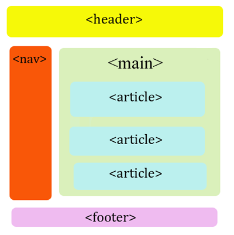
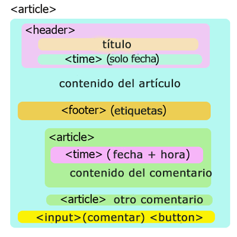

¿Recuerdas el primer reto de Frontend? Pues en este ejercicios tendrás que realizarlo nuevamente, pero ahora utilizando Bootstrap en su versión 2.3.2.
Esta es la maquetación que debes seguir (utilizando el grid system y las etiquetas que mencionamos acá):

Y esta es la estructura más detallada de cada artículo (ponle el contenido que desees). Preocúpate por utilizar todas las clases de Bootstrap que puedas para que las vayas conociendo como se debe:

Si deseas utilizar nuevamente Initializr te recomendaría descargarte la opción Classic H5BP y agregar posteriormente lo archivos CSS y JS del Bootstrap 2.3.2, ya que la versión de Bootstrap que se utiliza en Initializer es la 3.3.1 y tiene algunas variaciones.